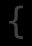
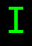

モンスター (Lv30-39) / Monsters (Lv30-39)
出現階層 30〜39 のモンスター（253 種）。名前をクリックすると個別の詳細ページが開きます。
Monsters native to dungeon level 30–39 (253). Click a name for its detail page.
| ID | 記号 / Sym | 名前 / Name | 階層 / Lv | 希少度 / Rar | 速度 / Spd | 体力 / HP | AC | 経験値 / Exp |
|---|---|---|---|---|---|---|---|---|
| 370 | 緑衣の修行僧 Jade monk |
30 | 2 | 115 | 44d12 | 46 | 600 | |
| 444 | サイクロプス Cyclops |
30 | 1 | 120 | 60d12 | 90 | 350 | |
| 464 | ミスリル・ゴーレム Mithril golem |
30 | 4 | 110 | 80d15 | 100 | 500 | |
| 465 | スケルトン・トロル Skeleton troll |
30 | 1 | 110 | 20d10 | 55 | 225 | |
| 466 | 骸骨ティラノサウルス Skeletal tyrannosaurus |
30 | 2 | 120 | 50d10 | 55 | 225 | |
| 467 | 『ジョーズ』 Jaws |
30 | 2 | 120 | 72d12 | 80 | 500 | |
| 469 | 巨大青アリ Giant blue ant |
30 | 2 | 110 | 8d8 | 50 | 80 | |
| 470 | 墓ワイト Grave wight |
30 | 1 | 110 | 12d10 | 50 | 325 | |
| 471 | シャドウ・ドレイク Shadow drake |
30 | 2 | 110 | 30d10 | 50 | 700 | |
| 472 | マンティコア Manticore |
30 | 2 | 120 | 25d10 | 15 | 300 | |
| 473 | 巨大軍隊アリ Giant army ant |
30 | 3 | 120 | 19d6 | 40 | 90 | |
| 474 | キラー・スライス・ビートル Killer slicer beetle |
30 | 2 | 110 | 22d10 | 60 | 200 | |
| 556 | ヤング万色ドラゴン Young multi-hued dragon |
30 | 1 | 110 | 42d10 | 60 | 1320 | |
| 868 | ビハインダー Behinder |
30 | 100 | 125 | 30d20 | 45 | 900 | |
| 898 | 花崗岩の壁 Granite wall |
30 | 2 | 100 | 15d15 | 120 | 350 | |
| 921 | インターネット・エクスプローダー Internet Exploder |
30 | 1 | 80 | 20d20 | 0 | 200 | |
| 926 | ツチノコ Tsuchinoko |
30 | 100 | 110 | 10d10 | 10 | 1000 | |
| 1001 | 『助さん』 Suke-san, the Mitsukuni's Warder |
30 | 255 | 115 | 40d15 | 80 | 500 | |
| 1002 | 『格さん』 Kaku-san, the Mitsukuni's Warder |
30 | 255 | 115 | 40d15 | 80 | 500 | |
| 1011 | 銀のエンゼル Silver Angel |
30 | 30 | 130 | 30d10 | 50 | 1 | |
| 1021 | 航海士『ナミ』 Nami, the Mate |
30 | 2 | 125 | 40d10 | 60 | 1300 | |
| 1065 | 地蔵尊の蛸 Octopus of Kshitigarbha |
30 | 100 | 110 | 10d20 | 30 | 30 | |
| 1104 | おじゃまぷよ Hindrance puyo |
30 | 10 | 108 | 30d6 | 60 | 50 | |
| 1124 | 撲殺の天使 Dokuro, the Bludgeoning Angel |
30 | 2 | 115 | 30d30 | 60 | 1300 | |
| 1140 | ウェンディゴ Wendigo |
30 | 3 | 120 | 30d19 | 55 | 500 | |
| 1155 | 二周目の小さな泡 Small aqua illusion in 2nd lap |
30 | 2 | 120 | 20d20 | 50 | 125 | |
| 1250 | 可燃性ガス Flammable gas |
30 | 4 | 90 | 3d3 | 37 | 15 | |
| 1287 | たこぶえ Takobue |
30 | 10 | 110 | 10d20 | 30 | 300 | |
| 1348 | カコデーモン Cacodemon |
30 | 1 | 110 | 27d19 | 70 | 250 | |
| 1363 | 地獄の出店 Hell's market stall |
30 | 4 | 120 | 30d20 | 80 | 300 | |
| 475 | ゴーゴン Gorgon |
31 | 2 | 110 | 30d20 | 88 | 275 | |
| 476 | ガグ Gug |
31 | 2 | 110 | 22d15 | 60 | 210 | |
| 477 | ゴースト Ghost |
31 | 1 | 120 | 13d8 | 30 | 350 | |
| 478 | 死番虫 Death watch beetle |
31 | 3 | 110 | 25d12 | 60 | 190 | |
| 927 | ひげおやじ『マリオ』 Mario |
31 | 4 | 110 | 80d10 | 80 | 2500 | |
| 966 | 地味な脇役『ルイージ』 Luigi |
31 | 4 | 110 | 80d10 | 80 | 2500 | |
| 1339 | ミミック(ミミック(ミミック(ミミック(箱)の像)の像)の像) Statue of Chest mimic mimic mimic mimic mimic |
31 | 6 | 110 | 30d14 | 40 | 560 | |
| 479 | オーガ・シャーマン Ogre shaman |
32 | 2 | 110 | 14d10 | 55 | 250 | |
| 480 | ネクサス・クイルスルグ Nexus quylthulg |
32 | 1 | 110 | 10d12 | 1 | 300 | |
| 481 | 闇の蜘蛛『シェロブ』 Shelob, Spider of Darkness |
32 | 3 | 115 | 16d100 | 80 | 1500 | |
| 482 | 巨大イカ Giant squid |
32 | 3 | 110 | 80d10 | 80 | 600 | |
| 483 | 食屍鬼の王 Ghoulking |
32 | 2 | 120 | 15d12 | 60 | 340 | |
| 484 | ドゥームバット Doombat |
32 | 2 | 120 | 24d24 | 75 | 250 | |
| 485 | ニンジャ Ninja |
32 | 2 | 120 | 13d12 | 60 | 300 | |
| 486 | 記憶苔 Memory moss |
32 | 3 | 110 | 1d2 | 1 | 150 | |
| 488 | スペクテイター Spectator |
32 | 3 | 110 | 20d10 | 1 | 150 | |
| 981 | サンダーバード Thunder bird |
32 | 3 | 120 | 20d25 | 30 | 900 | |
| 1254 | 踊る道化師『ペニーワイズ』 Pennywise, the dancing clown |
32 | 3 | 120 | 100d12 | 70 | 1500 | |
| 1303 | ヨグ=ソトートの落とし子 Spawn of Yog-Sothoth |
32 | 2 | 112 | 40d15 | 75 | 65 | |
| 1384 | クリーピング・ダイヤモンド Creeping diamonds |
32 | 6 | 120 | 40d8 | 100 | 200 | |
| 1393 | ブラックマーケットの中級エージェント Mature agent of black market |
32 | 4 | 130 | 15d10 | 100 | 350 | |
| 489 | 『ボクラグ』 Bokrug |
33 | 7 | 110 | 11d90 | 70 | 1600 | |
| 491 | ハーフトロル Half-troll |
33 | 2 | 110 | 25d14 | 50 | 300 | |
| 492 | 白衣の修行僧 Ivory monk |
33 | 1 | 115 | 41d14 | 51 | 700 | |
| 493 | 岩トロル『バート』 Bert the Stone Troll |
33 | 3 | 115 | 11d100 | 70 | 2000 | |
| 494 | 岩トロル『ビル』 Bill the Stone Troll |
33 | 3 | 115 | 11d100 | 70 | 2000 | |
| 495 | 岩トロル『トム』 Tom the Stone Troll |
33 | 3 | 115 | 11d100 | 70 | 2000 | |
| 496 | 洞窟トロル Cave troll |
33 | 1 | 110 | 24d12 | 50 | 350 | |
| 497 | 反逆パラディン Anti-paladin |
33 | 2 | 120 | 30d20 | 50 | 450 | |
| 498 | ログルス使い Logrus master |
33 | 3 | 120 | 30d10 | 50 | 550 | |
| 499 | 塚ワイト Barrow wight |
33 | 3 | 110 | 15d10 | 40 | 375 | |
| 500 | ジャイアント・スケルトン・トロル Giant skeleton troll |
33 | 1 | 110 | 45d10 | 50 | 325 | |
| 501 | カオス・ドレイク Chaos drake |
33 | 3 | 110 | 50d10 | 80 | 850 | |
| 502 | ロー・ドレイク Law drake |
33 | 3 | 110 | 55d10 | 80 | 850 | |
| 503 | バランス・ドレイク Balance drake |
33 | 3 | 110 | 60d10 | 80 | 700 | |
| 504 | 天上界ドレイク Ethereal drake |
33 | 2 | 110 | 45d10 | 80 | 700 | |
| 506 | 『巨人ファゾルト』 Fasolt the Giant |
33 | 7 | 110 | 11d111 | 70 | 2000 | |
| 507 | ログルス・ゴースト Logrus ghost |
33 | 3 | 120 | 14d20 | 30 | 350 | |
| 508 | スペクター Spectre |
33 | 3 | 120 | 14d20 | 30 | 350 | |
| 509 | 水トロル Water troll |
33 | 1 | 110 | 36d10 | 50 | 420 | |
| 510 | 火のエレメンタル Fire elemental |
33 | 2 | 110 | 30d8 | 50 | 350 | |
| 511 | 智天使 Cherub |
33 | 4 | 120 | 45d10 | 68 | 400 | |
| 512 | 水のエレメンタル Water elemental |
33 | 2 | 110 | 25d8 | 40 | 325 | |
| 513 | 万色ハウンド Multi-hued hound |
33 | 2 | 115 | 30d10 | 40 | 600 | |
| 549 | ホワイト・ドラゴン Mature white dragon |
33 | 1 | 115 | 40d10 | 70 | 1200 | |
| 560 | ブルー・ドラゴン Mature blue dragon |
33 | 1 | 115 | 40d10 | 70 | 1200 | |
| 561 | グリーン・ドラゴン Mature green dragon |
33 | 1 | 115 | 40d10 | 70 | 1200 | |
| 592 | ブラック・ドラゴン Mature black dragon |
33 | 1 | 115 | 40d10 | 70 | 1200 | |
| 915 | 初級修験者 Elementary mystic |
33 | 3 | 115 | 35d10 | 50 | 700 | |
| 975 | 『That @$^%& Black Bat』 That @$^%& Black Bat |
33 | 4 | 130 | 30d10 | 75 | 1000 | |
| 1062 | 放浪者『グルー』 Groo the Wanderer |
33 | 255 | 120 | 13d113 | 70 | 2000 | |
| 1097 | ヤング・クイックシルバー・ドラゴン Young quicksilver dragon |
33 | 2 | 115 | 38d10 | 90 | 900 | |
| 1156 | 二周目のやや大きな泡 Medium aqua illusion in 2nd lap |
33 | 2 | 120 | 20d20 | 50 | 250 | |
| 1228 | グレーター・ファルメル・スクルカー Greater falmer skulker |
33 | 3 | 115 | 22d22 | 70 | 700 | |
| 1234 | シャウラス・リーパー Chaurus reaper |
33 | 2 | 115 | 30d25 | 80 | 500 | |
| 1267 | キューちゃん Raven |
33 | 3 | 120 | 24d23 | 60 | 350 | |
| 514 | ナイトストーカー Night stalker |
34 | 3 | 130 | 20d13 | 46 | 310 | |
| 515 | キャリオン・クローラー Carrion crawler |
34 | 2 | 110 | 20d12 | 40 | 100 | |
| 516 | 大泥棒 Master thief |
34 | 2 | 130 | 18d10 | 30 | 350 | |
| 517 | 人間トランプ『ジャート』 Jurt the Living Trump |
34 | 5 | 120 | 10d100 | 90 | 1200 | |
| 518 | リッチ Lich |
34 | 3 | 110 | 30d10 | 60 | 800 | |
| 519 | ガス・スポア Gas spore |
34 | 4 | 110 | 25d10 | 1 | 100 | |
| 520 | マスター・バンパイア Master vampire |
34 | 3 | 110 | 34d10 | 60 | 750 | |
| 521 | 東洋の吸血鬼 Oriental vampire |
34 | 3 | 110 | 30d12 | 60 | 750 | |
| 522 | 王のミイラ Greater mummy |
34 | 3 | 110 | 54d13 | 68 | 800 | |
| 523 | <コーン>の血戮悪魔 Bloodletter of Khorne |
34 | 1 | 110 | 30d8 | 40 | 450 | |
| 524 | 巨大灰色サソリ Giant grey scorpion |
34 | 4 | 120 | 18d20 | 50 | 275 | |
| 525 | 地のエレメンタル Earth elemental |
34 | 2 | 100 | 30d10 | 60 | 375 | |
| 526 | 風のエレメンタル Air elemental |
34 | 2 | 120 | 30d5 | 50 | 390 | |
| 527 | ドゥーム・ドレイク Doom drake |
34 | 3 | 110 | 40d11 | 100 | 750 | |
| 528 | ガーゴイル Gargoyle |
34 | 2 | 110 | 18d12 | 50 | 110 | |
| 589 | レッド・ドラゴン Mature red dragon |
34 | 1 | 115 | 46d10 | 75 | 1400 | |
| 928 | 『クッパ大王』 King Koopa |
34 | 4 | 110 | 100d15 | 120 | 3000 | |
| 990 | ペガサス Pegasus |
34 | 6 | 115 | 30d20 | 100 | 700 | |
| 1046 | 黒色王『ウルファング』 Ulfang the Black |
34 | 5 | 120 | 10d100 | 90 | 1200 | |
| 1092 | オーラントの公使 Fat official of Allant |
34 | 4 | 108 | 80d12 | 110 | 2000 | |
| 1159 | プチモアイ Small Moai |
34 | 50 | 120 | 10d10 | 50 | 250 | |
| 1253 | 女王虫『クイーンランゴスタ』 Vespoid Queen |
34 | 4 | 120 | 120d10 | 80 | 1000 | |
| 1265 | テレサ Boo |
34 | 3 | 115 | 30d19 | 50 | 500 | |
| 1319 | アルチャウ Alchau |
34 | 3 | 120 | 28d20 | 10 | 200 | |
| 335 | 大鷲 Great eagle |
35 | 2 | 135 | 5d100 | 65 | 450 | |
| 487 | ストーム・ジャイアント Storm giant |
35 | 1 | 110 | 38d18 | 60 | 1500 | |
| 529 | 陰気なレプラコーン Malicious leprechaun |
35 | 4 | 120 | 4d5 | 13 | 85 | |
| 530 | エオグ・ゴーレム Eog golem |
35 | 4 | 100 | 100d20 | 125 | 1200 | |
| 531 |  |
人々を爆死させてきた左手『シアーハートアタック』 Sheer Heart Attack, the Bomb Hand |
35 | 2 | 120 | 12d12 | 150 | 200 |
| 532 | ダガシ Dagashi |
35 | 4 | 120 | 13d25 | 70 | 500 | |
| 533 | 首なし幽霊 Headless ghost |
35 | 3 | 120 | 20d25 | 30 | 550 | |
| 534 | ドリード Dread |
35 | 2 | 120 | 25d20 | 30 | 600 | |
| 535 | レンの蜘蛛 Leng spider |
35 | 4 | 120 | 26d20 | 50 | 250 | |
| 536 | 星の精 Star vampire |
35 | 2 | 120 | 30d25 | 40 | 700 | |
| 537 | 煙のエレメンタル Smoke elemental |
35 | 3 | 120 | 15d10 | 80 | 375 | |
| 538 | オログ Olog |
35 | 1 | 110 | 42d10 | 50 | 450 | |
| 539 | スリング・ハーフリング Halfling slinger |
35 | 1 | 110 | 30d9 | 40 | 330 | |
| 540 | 重力ハウンド Gravity hound |
35 | 2 | 110 | 35d10 | 30 | 500 | |
| 541 | 酸性細胞 Acidic cytoplasm |
35 | 5 | 120 | 40d10 | 18 | 36 | |
| 542 | 遅鈍ハウンド Inertia hound |
35 | 2 | 110 | 35d10 | 30 | 500 | |
| 543 | インパクト・ハウンド Impact hound |
35 | 2 | 110 | 35d10 | 30 | 500 | |
| 544 | 海トロル Sea troll |
35 | 1 | 110 | 41d10 | 50 | 440 | |
| 545 | 汚物エレメンタル Ooze elemental |
35 | 3 | 110 | 13d10 | 80 | 300 | |
| 547 | ムーマク Mumak |
35 | 3 | 110 | 90d10 | 55 | 2100 | |
| 548 | 巨大火アリ Giant fire ant |
35 | 1 | 110 | 20d10 | 49 | 350 | |
| 593 | 万色ドラゴン Mature multi-hued dragon |
35 | 2 | 115 | 64d10 | 65 | 1700 | |
| 863 | 量子ドット Quantum dot |
35 | 5 | 110 | 4d2 | 100 | 50 | |
| 896 | バズーカ Bazooker |
35 | 2 | 110 | 8d40 | 60 | 1500 | |
| 897 | 破片ボルテックス Shard vortex |
35 | 4 | 120 | 24d10 | 28 | 630 | |
| 1004 | 異世界からの勇者『ピップ』 Pip, the Adventurer from Another World |
35 | 3 | 110 | 20d48 | 80 | 1800 | |
| 1047 | 黄衣の修行僧 Topaz monk |
35 | 2 | 115 | 59d11 | 46 | 800 | |
| 1108 | セラの天使 Serra angel |
35 | 2 | 120 | 50d14 | 68 | 1800 | |
| 1109 | センギアの吸血鬼 Sengir vampire |
35 | 2 | 120 | 50d14 | 80 | 1800 | |
| 1122 | 半魔のオーク Half-demon orc |
35 | 2 | 120 | 25d10 | 50 | 600 | |
| 1172 | 緑衣の高位修行僧 High jade monk |
35 | 2 | 120 | 54d12 | 46 | 800 | |
| 1205 | 原初への裏切り『オダハヴィーング』 Odahviing, the betrayer of Alduin |
35 | 3 | 120 | 30d40 | 95 | 3500 | |
| 1206 | 声の道に仇なすもの『デルフィン』 Delphine, the mortal enemy for the way of the voice |
35 | 1 | 115 | 55d20 | 90 | 3500 | |
| 1217 | ドラウグル・スカージ Draugr scourge |
35 | 2 | 115 | 25d25 | 55 | 400 | |
| 1272 | セイレーン Siren |
35 | 3 | 120 | 80d20 | 50 | 500 | |
| 1301 | ハーフジャイアント Half-giant |
35 | 3 | 110 | 80d18 | 60 | 1500 | |
| 1312 | イヌワシ Golden eagle |
35 | 2 | 120 | 7d100 | 65 | 350 | |
| 1355 | バグピエロ『カフモ』 Kaufmo, the abstracted clown |
35 | 3 | 120 | 30d40 | 100 | 6000 | |
| 1370 | スネッコ Snecko |
35 | 2 | 115 | 30d20 | 80 | 1100 | |
| 1390 | 海坊主 Umibozu |
35 | 4 | 120 | 100d10 | 100 | 2000 | |
| 443 | タツノオトシゴ Seahorse |
36 | 2 | 120 | 111d11 | 60 | 860 | |
| 490 | バイクロプス Biclops |
36 | 1 | 120 | 66d12 | 90 | 1200 | |
| 505 | 『石川五右衛門』 Ishikawa Goemon |
36 | 7 | 120 | 13d113 | 70 | 2000 | |
| 550 | ゾーン Xorn |
36 | 2 | 110 | 16d10 | 80 | 650 | |
| 551 | ブラック・トロル『ログログ』 Rogrog the Black Troll |
36 | 5 | 120 | 15d100 | 70 | 5000 | |
| 552 | 霧の巨人 Mist giant |
36 | 2 | 120 | 35d20 | 50 | 450 | |
| 553 | パターン・ゴースト Pattern ghost |
36 | 3 | 120 | 20d25 | 30 | 400 | |
| 554 | グレイ・レイス Grey wraith |
36 | 1 | 110 | 19d10 | 50 | 700 | |
| 555 | レヴナント Revenant |
36 | 1 | 125 | 111d2 | 70 | 800 | |
| 557 | ラアルの破壊集大成 Raal's Tome of Destruction |
36 | 4 | 120 | 50d10 | 150 | 1500 | |
| 558 | 巨像 Colossus |
36 | 4 | 105 | 30d100 | 150 | 900 | |
| 559 | ヤング・ゴールド・ドラゴン Young gold dragon |
36 | 2 | 110 | 30d10 | 63 | 950 | |
| 562 | ブロンズ・ドラゴン Mature bronze dragon |
36 | 2 | 110 | 44d10 | 70 | 1300 | |
| 564 | ナイトブレード Nightblade |
36 | 2 | 120 | 19d13 | 60 | 315 | |
| 565 | トラッパー Trapper |
36 | 3 | 120 | 60d10 | 75 | 580 | |
| 566 | ボダック Bodak |
36 | 2 | 110 | 35d10 | 68 | 750 | |
| 567 | 時限爆弾 Time bomb |
36 | 5 | 130 | 12d12 | 40 | 50 | |
| 568 | メッツォデーモン Mezzodaemon |
36 | 2 | 110 | 40d13 | 68 | 750 | |
| 569 | 古のもの Elder thing |
36 | 3 | 110 | 35d13 | 70 | 800 | |
| 570 | 氷のエレメンタル Ice elemental |
36 | 2 | 110 | 35d10 | 60 | 650 | |
| 571 | イプシシマス Ipsissimus |
36 | 2 | 110 | 28d13 | 50 | 666 | |
| 572 | 『グレーター地獄魔法おばけキノコ=クイルスルグ人間』 The Greater Hell Magic Mushroom Were-Quylthulg |
36 | 3 | 120 | 19d99 | 80 | 2500 | |
| 573 | 『ボレル公爵』 Lord Borel of Hendrake |
36 | 2 | 120 | 18d100 | 100 | 1200 | |
| 574 | 混沌の落とし子 Chaos spawn |
36 | 2 | 110 | 26d26 | 50 | 600 | |
| 870 | 黒衣の修行僧 Ebony monk |
36 | 3 | 115 | 57d11 | 57 | 1000 | |
| 963 | ビルダー帝国帝王『ボ帝ビル』 Botei-Building, the Emperor |
36 | 2 | 120 | 12d100 | 130 | 2500 | |
| 1008 | 悪魔崇拝者 Demonologist |
36 | 2 | 115 | 28d10 | 50 | 700 | |
| 1125 | 赤鬼 Red ogre |
36 | 1 | 110 | 20d18 | 65 | 800 | |
| 1126 | 青鬼 Blue ogre |
36 | 1 | 110 | 20d18 | 65 | 800 | |
| 1127 | 緑鬼 Green ogre |
36 | 1 | 110 | 20d18 | 65 | 800 | |
| 1157 | 二周目の大きな泡 Large aqua illusion in 2nd lap |
36 | 2 | 120 | 25d25 | 50 | 500 | |
| 1224 | ファルメル・グルームルーカー Falmer gloomlurker |
36 | 3 | 115 | 30d29 | 65 | 1400 | |
| 1279 | 紅衣の修行僧 Crimson monk |
36 | 2 | 115 | 55d11 | 49 | 800 | |
| 1308 | 気狂いピエロ『ドネルド・マクドネルド』 Roneld McDoneld, the Mad Pierrot |
36 | 3 | 120 | 50d30 | 80 | 3000 | |
| 1309 | 足なんて飾り『サンダーズ大佐』 Colonel Thunders, the Legless Fryer |
36 | 3 | 120 | 50d30 | 80 | 3000 | |
| 575 | ミイラ・トロル Mummified troll |
37 | 1 | 110 | 19d10 | 50 | 420 | |
| 576 | 炎の使者 Fire angel |
37 | 3 | 120 | 50d10 | 100 | 1500 | |
| 577 | 窖の怪物 Crypt thing |
37 | 3 | 120 | 160d5 | 60 | 2000 | |
| 578 |  |
虹色の蝶人 Chaos butterfly |
37 | 2 | 120 | 60d10 | 60 | 1000 |
| 579 | タイム・エレメンタル Time elemental |
37 | 2 | 120 | 35d10 | 70 | 1000 | |
| 580 | 盲目のもの Flying polyp |
37 | 2 | 120 | 35d10 | 70 | 1000 | |
| 581 | 『女王アリ』 The Queen Ant |
37 | 2 | 120 | 15d100 | 100 | 1000 | |
| 582 | ウィル・オー・ウィスプ Will o' the wisp |
37 | 4 | 130 | 20d10 | 150 | 500 | |
| 583 | シャン Shan |
37 | 4 | 120 | 20d10 | 120 | 250 | |
| 584 | マグマのエレメンタル Magma elemental |
37 | 2 | 110 | 35d10 | 70 | 950 | |
| 585 | ブラック・プリン Black pudding |
37 | 5 | 110 | 40d10 | 18 | 36 | |
| 586 | 殺人タマムシ Killer iridescent beetle |
37 | 2 | 110 | 25d10 | 60 | 850 | |
| 587 | ネクサス・ボルテックス Nexus vortex |
37 | 1 | 120 | 32d10 | 40 | 800 | |
| 588 | プラズマ・ボルテックス Plasma vortex |
37 | 1 | 120 | 32d10 | 40 | 800 | |
| 590 | ゴールド・ドラゴン Mature gold dragon |
37 | 2 | 110 | 56d10 | 80 | 1500 | |
| 591 | クリスタル・ドレイク Crystal drake |
37 | 2 | 115 | 50d10 | 100 | 1500 | |
| 941 | 骸骨ドラゴン Bone dragon |
37 | 3 | 110 | 120d10 | 55 | 1700 | |
| 1236 | シャウラス・ハンター Chaurus hunter |
37 | 2 | 120 | 38d29 | 70 | 1200 | |
| 1268 | 『ビッグキューちゃん』 Raphael, the Big Raven |
37 | 3 | 120 | 40d30 | 60 | 7000 | |
| 1323 | 狂戦士『バストラル』 Bastral, the berserker |
37 | 4 | 121 | 19d100 | 90 | 2500 | |
| 1360 | レアおたずねものムシ Master Criminal Worm |
37 | 15 | 120 | 30d20 | 50 | 25000 | |
| 384 | 疾翼『メネルドール』 Meneldor the Swift |
38 | 1 | 140 | 13d100 | 65 | 7000 | |
| 594 | 空飛ぶ鯨 Sky whale |
38 | 6 | 110 | 80d10 | 75 | 1750 | |
| 595 | 父なる『ダゴン』 Father Dagon |
38 | 3 | 120 | 19d99 | 80 | 3250 | |
| 596 | 母なる『ハイドラ』 Mother Hydra |
38 | 3 | 120 | 19d99 | 80 | 3250 | |
| 597 | 死の騎士 Death knight |
38 | 1 | 120 | 60d10 | 100 | 1111 | |
| 598 | ログルスの達人『マンドール』 Mandor, Master of the Logrus |
38 | 5 | 120 | 88d11 | 90 | 1600 | |
| 599 | タイム・ボルテックス Time vortex |
38 | 4 | 130 | 32d10 | 40 | 900 | |
| 600 | 発光ボルテックス Shimmering vortex |
38 | 4 | 140 | 6d12 | 30 | 200 | |
| 602 | 古代ブロンズ・ドラゴン Ancient bronze dragon |
38 | 2 | 120 | 73d10 | 100 | 1700 | |
| 603 | ビホルダー Beholder |
38 | 4 | 115 | 16d99 | 70 | 4000 | |
| 604 | ノーブル・ワイト Noble wight |
38 | 2 | 115 | 38d10 | 40 | 1600 | |
| 605 | 熾天使 Seraph |
38 | 4 | 120 | 50d10 | 68 | 1800 | |
| 606 | 炎の精『ローゲ』 Loge, Spirit of Fire |
38 | 3 | 120 | 15d100 | 50 | 3000 | |
| 607 | ブラック・レイス Black wraith |
38 | 2 | 120 | 50d10 | 55 | 1700 | |
| 608 | 夜鬼 Nightgaunt |
38 | 2 | 110 | 24d10 | 50 | 1000 | |
| 609 | 地獄の男爵 Baron of hell |
38 | 3 | 110 | 100d12 | 130 | 3000 | |
| 650 | 超大なる『ギガント』 Giganto the Gargantuan |
38 | 6 | 110 | 80d25 | 75 | 7750 | |
| 916 | 中級修験者 Medium mystic |
38 | 3 | 120 | 35d15 | 50 | 900 | |
| 978 | 黄金王『アル=ファラゾン』 Ar-Pharazon the Golden |
38 | 6 | 120 | 180d10 | 90 | 2500 | |
| 1013 | 『ロレント』 Rolento |
38 | 4 | 150 | 90d10 | 150 | 4000 | |
| 1023 | 手榴弾 Hand grenade |
38 | 255 | 130 | 5d1 | 0 | 0 | |
| 1128 | 首なし鬼 Headless ogre |
38 | 1 | 115 | 21d19 | 70 | 900 | |
| 1173 | 白衣の高位修行僧 High ivory monk |
38 | 1 | 120 | 47d17 | 51 | 900 | |
| 1269 | 精霊馬 Spirit horse |
38 | 3 | 123 | 271d3 | 13 | 813 | |
| 1305 | スーパーモンキー『孫悟空』 Sun Wukong, the Punkiest Monkey |
38 | 3 | 120 | 30d50 | 80 | 3300 | |
| 1344 | 『鈴木土下座ェ門』 SUZUKI Dogezaemon |
38 | 4 | 120 | 16d100 | 80 | 8000 | |
| 601 | 古代ブルー・ドラゴン Ancient blue dragon |
39 | 1 | 120 | 60d12 | 85 | 2500 | |
| 610 | 『スキュラ』 Scylla |
39 | 2 | 125 | 100d15 | 90 | 3500 | |
| 611 | リッチの修行僧 Monastic lich |
39 | 2 | 115 | 12d80 | 80 | 2500 | |
| 612 | 冥界レイス Nether wraith |
39 | 2 | 120 | 48d10 | 55 | 1700 | |
| 613 | 炎の精 Fire vampire |
39 | 4 | 120 | 52d12 | 133 | 1200 | |
| 614 | 七首ヒドラ 7-headed hydra |
39 | 2 | 120 | 100d10 | 90 | 2000 | |
| 615 | レブマの女王『モイア』 Moire, Queen of Rebma |
39 | 3 | 120 | 20d100 | 40 | 3250 | |
| 617 | 古代ホワイト・ドラゴン Ancient white dragon |
39 | 1 | 120 | 60d12 | 85 | 2500 | |
| 618 | 古代グリーン・ドラゴン Ancient green dragon |
39 | 1 | 120 | 72d10 | 85 | 2400 | |
| 619 | クトーニアン Chthonian |
39 | 2 | 120 | 100d10 | 90 | 2300 | |
| 620 | エルドラク Eldrak |
39 | 3 | 110 | 75d10 | 80 | 800 | |
| 621 | エティン Ettin |
39 | 3 | 110 | 10d100 | 80 | 800 | |
| 622 | ナイトメア Night mare |
39 | 3 | 120 | 15d100 | 85 | 2900 | |
| 623 | バンパイア・ロード Vampire lord |
39 | 3 | 120 | 16d100 | 70 | 1800 | |
| 624 | 古代ブラック・ドラゴン Ancient black dragon |
39 | 1 | 120 | 60d12 | 85 | 2500 | |
| 985 | ユニコーン Unicorn |
39 | 6 | 120 | 30d50 | 100 | 2000 | |
| 1098 | クイックシルバー・ドラゴン Mature quicksilver dragon |
39 | 3 | 120 | 54d10 | 110 | 1500 | |
| 1158 | 二周目の特大の泡 Extra large aqua illusion in 2nd lap |
39 | 3 | 120 | 25d25 | 50 | 1000 | |
| 1276 | 点『P』 Point P |
39 | 5 | 140 | 10d100 | 50 | 3800 | |
| 1331 | ポンチャウ Dependenchau |
39 | 4 | 130 | 38d20 | 10 | 450 | |
| 1349 | マンキュバス Mancubus |
39 | 2 | 105 | 35d40 | 90 | 2500 |
🤖 このページは
lib/edit/MonraceDefinitions.jsoncから自動生成されています。手動で編集しないでください — 変更は次回の再生成で上書きされます。 This page is auto-generated fromlib/edit/MonraceDefinitions.jsonc. Do not edit by hand — changes are overwritten on regeneration. 生成 / Generated: 2026-07-04 03:44 UTC · hengband5ebae9734·tools/generate-wiki.mjs